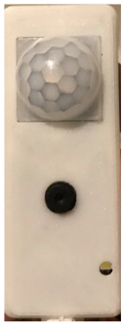
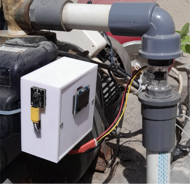
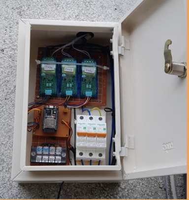

ZettaByte Pte Ltd · Bali
Villa management system
May 2023 to February 2024. A camera and two meters on one villa network. Each device stays quiet until it has something to send.

Camera
Smart camera
Wakes when someone moves, then sends the clip to the database.

Water
Water meter
Measures use on the pipe and sends an update every hour.

Power
Electricity meter
Reports consumption every hour and sends a Telegram alert.